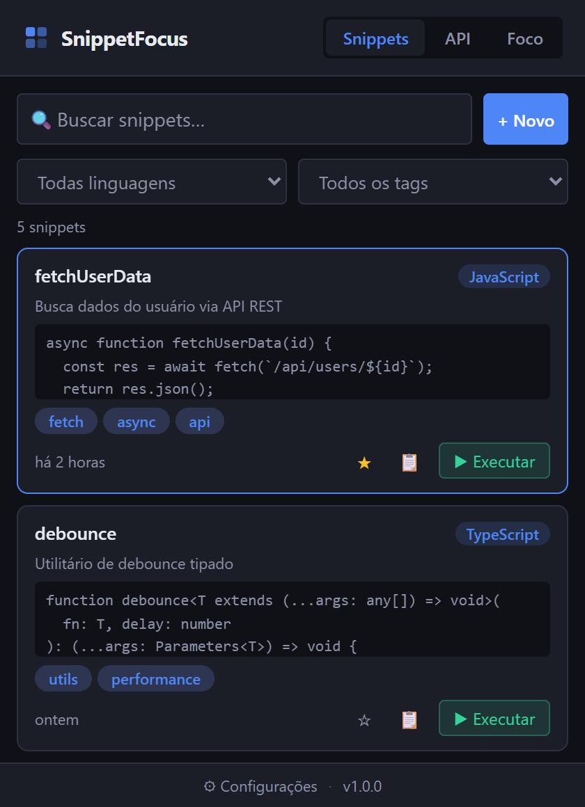
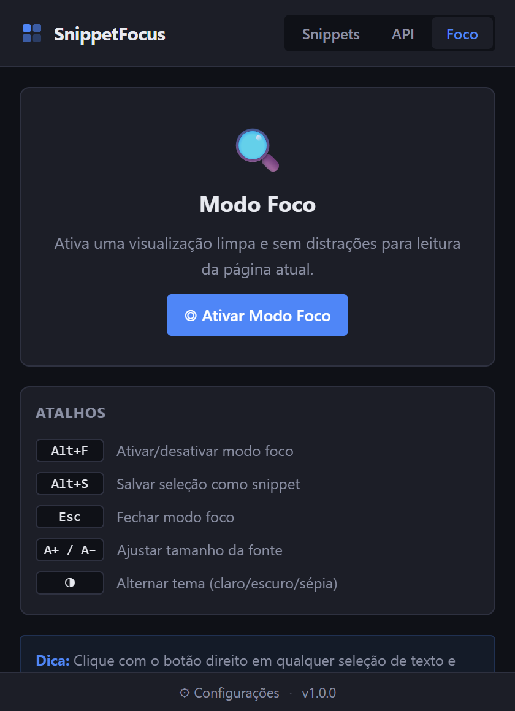
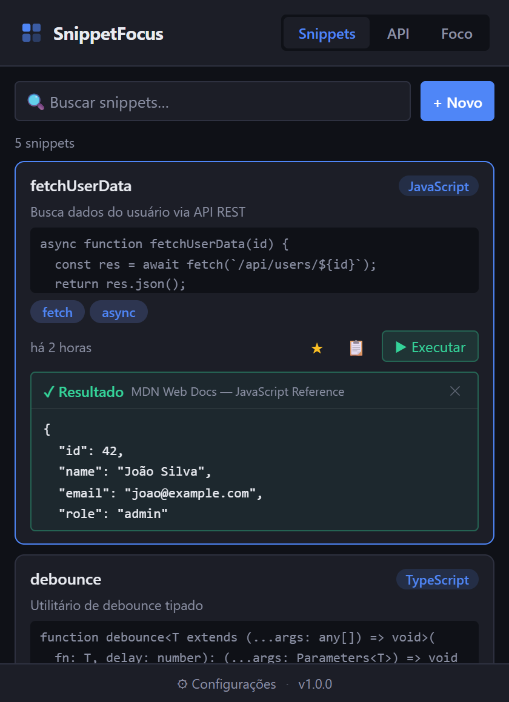
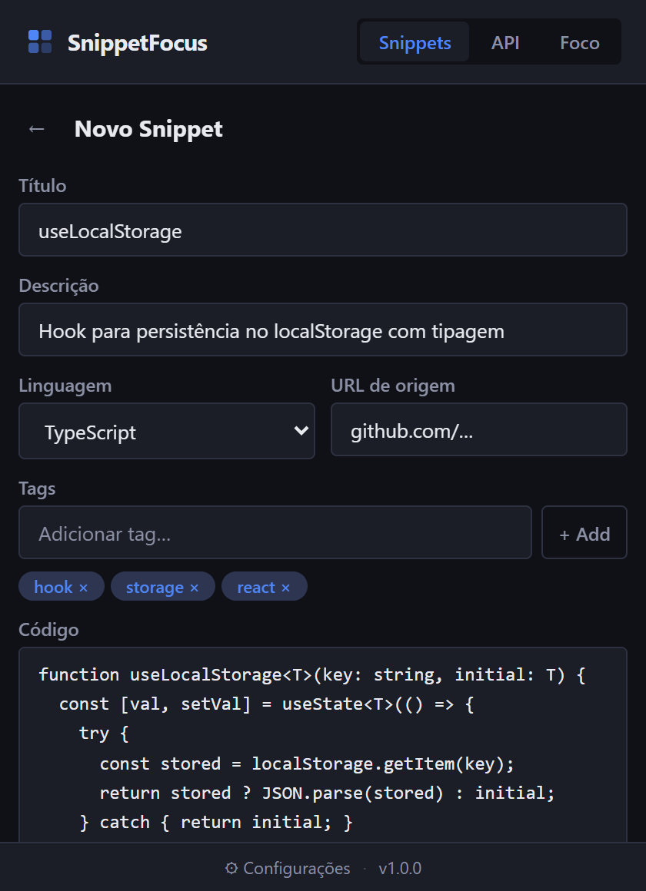
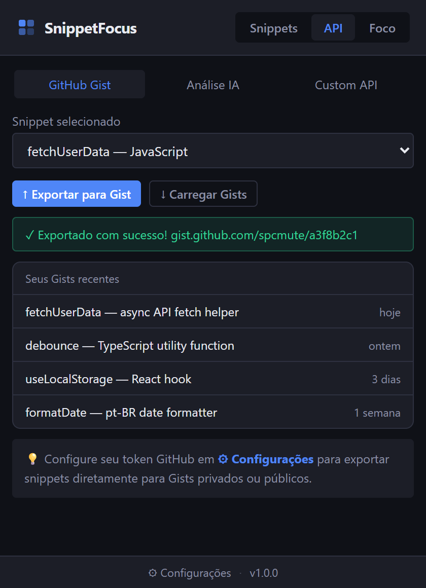

SnippetFocus brings code management, distraction-free reading, and in-browser JavaScript execution together — all locally, no account required.

Three integrated tools to boost your productivity without leaving Chrome.
Save, organize, and find your snippets in seconds. Supports 12 languages with search by title, content, and tags.
Strips distractions and presents page content in a clean layout with typography optimized for long reads.

Execute any snippet directly in the active tab with one click. See the result inline — no DevTools needed.

Connect your favorite tools directly from the popup.
Add SnippetFocus to Chrome from the Web Store in one click. No sign-up, no account — works immediately.
Select text, right-click, and choose "Save as Snippet" — or press Alt+S.

Open the popup, find your snippet and run it directly in the active tab. The result appears in the popup — no DevTools required.
Dark, clean interface built for developers.

Save selection as snippet
Toggle focus mode
Close focus mode
Adjust font size (focus mode)
All data is stored locally in your browser via chrome.storage.local. Nothing is sent to external servers. Your API keys (GitHub, OpenAI) also stay on your device only.
Yes! In the Settings page (⚙ icon in the popup) there is a "Data" section with options to export all snippets as JSON and import them back whenever you need.
It works on most web pages. The extension uses chrome.debugger to execute code, which bypasses CSP restrictions. System pages like chrome:// are not accessible.
No. SnippetFocus works immediately after installation — no sign-up or login required. GitHub and OpenAI integrations are optional and only need your API key in settings.
SnippetFocus is currently optimized for Google Chrome and Chromium-based browsers (Edge, Brave, Opera). Firefox support is planned.
Focus Mode automatically detects the main content of the page (article, main, etc.) and displays only that content in a full-screen overlay with optimized typography. Press Alt+F to activate or Esc to close.
Free, no sign-up required, and all data stored locally in your browser.
Add to Chrome — it's freeChrome Web Store · Manifest V3 · Open source